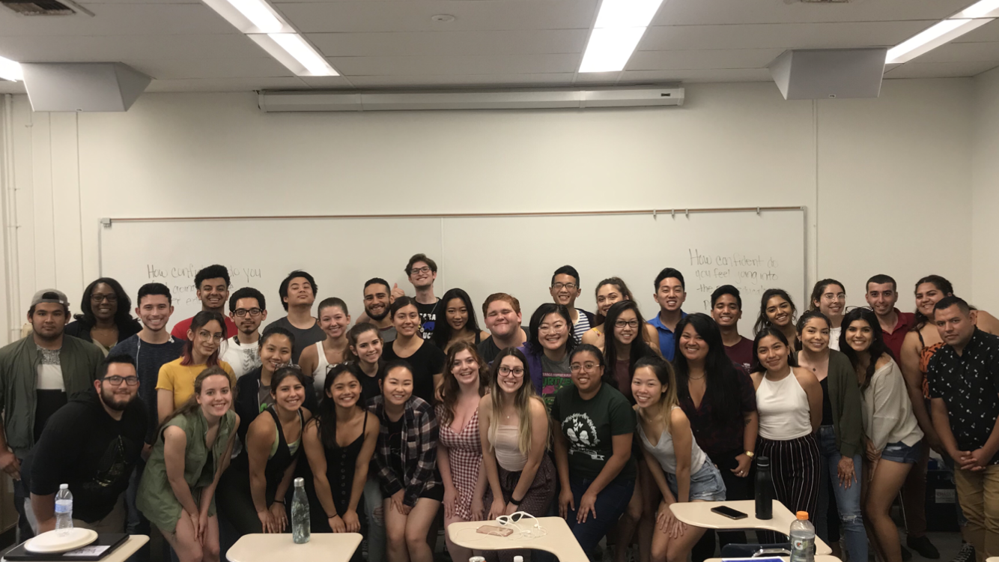
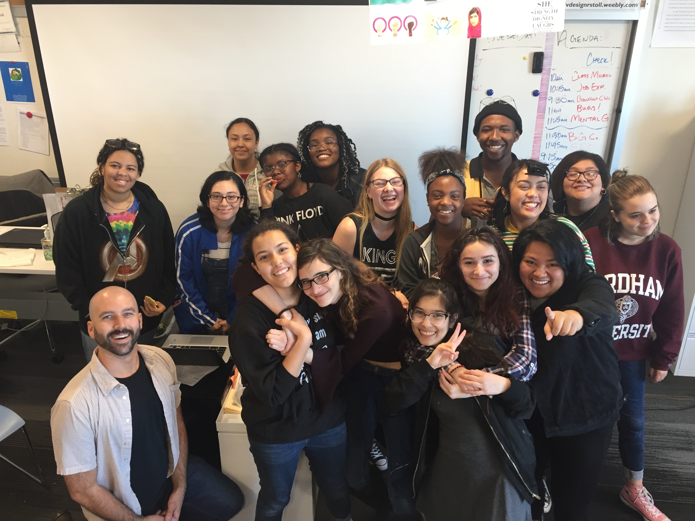
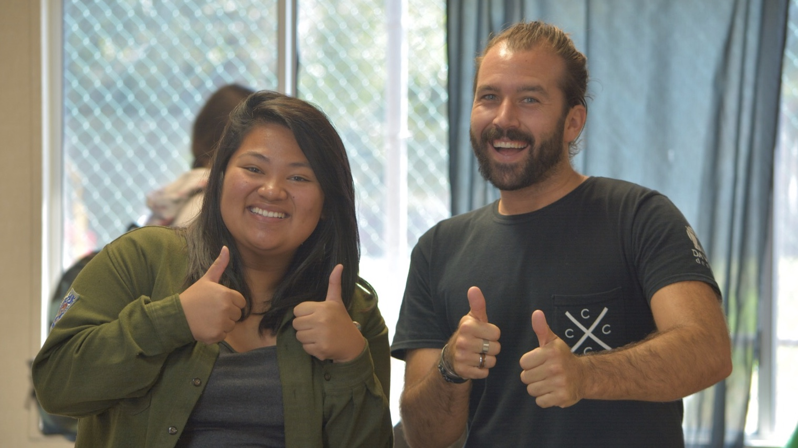
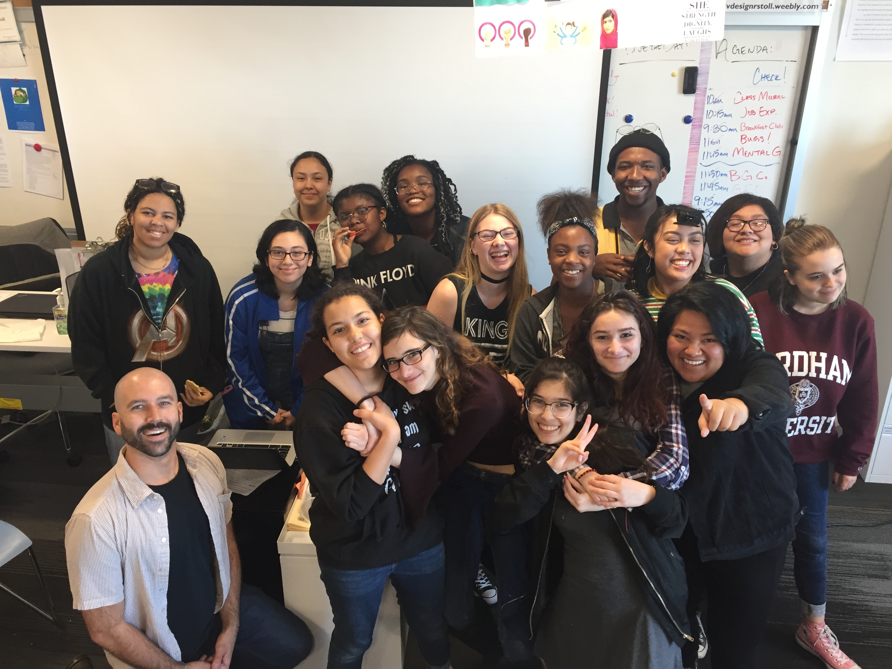
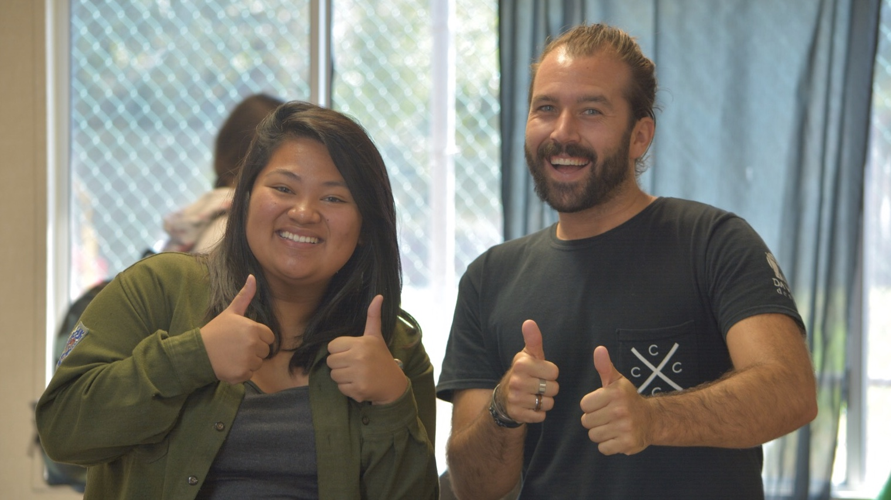

Alysson Distor
I’ve made it my mission in life to make a positive impact on as many people as I can. I want to be someone that can say has inspired them to be a better version of themselves. Whether it be helping people find out who they are, motivating them to make a change in the world, or guiding them into being a happier person, I want to humbly make my mark in the world by playing a positive role in someone’s life. With all that being said, I’ve dedicated my professional life and career to be a mentor and an educator.
Currently, I am working as a Peer Educator under the CHASS F1RST programs. My duty as a Peer Educator is to guide first-years into the right path of transitioning smoothly from high school to college. By doing so, I instruct several classes of freshmen and give them engaging and interactive lesson plans that give them the tips and tricks of how to make the most of their time in college. Additionally, I also meet with my students individually twice a quarter to check in on their life and experiences. Overall, I have made genuine connections with each of my students, and I can say that I have become a positive role model in many of their lives.
From this point forward, I want to keep working in environments where I can actively interact with students and ensure that they are having the best possible experience with their education. I plan on building my experience by continuing to be active as a role model in student life, whether it be as a mentor, an assistant, or a teacher. Definitely, my goal is to be a U.S. History high school teacher, and I am willing to work diligently to achieve my dreams.
Experience
Peer Educator
• Instructed classes of first-year students on transitioning into college
• Collaborated with professional and peer staff to create lesson plans and educational content
• Worked hands-on with students and individually mentored them through their first quarter of college
Club Leader
• Co-founder and co-leader of Da Vinci's first LGBTQ+ club
• Worked with teacher to coordinate plans to accomodate to LGBTQ students’ needs
• Facilitated discussions on issues, advice and mental health
• Mentored younger members of club on what it is like being queer in high school
• Collaborated with other co-leaders to organize each weekly meeting and create activities and events to promote LGBTQ wellness in school
Seminar Instructor
• Co-founder and co-instructor of "Art-repreneur Seminar"
• Instructed students on how to make a living out of art by creating lesson plans
• Mentored students to produce quality work to be sold and displayed at artist alley event
Education
University of California, Riverside
University of California, Riverside
Portfolio




 